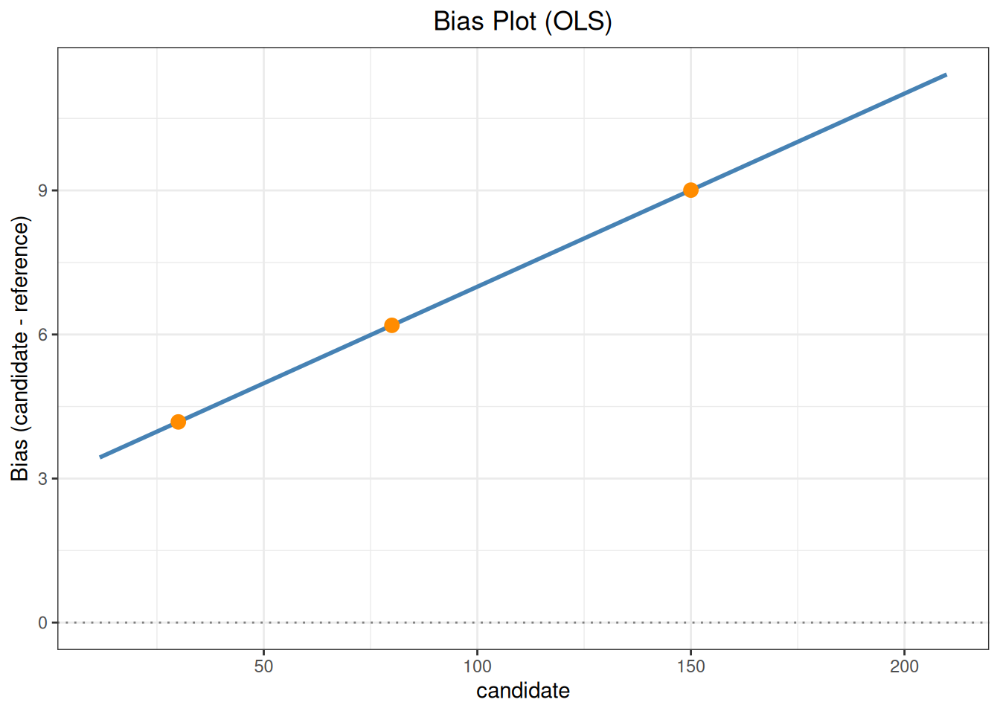
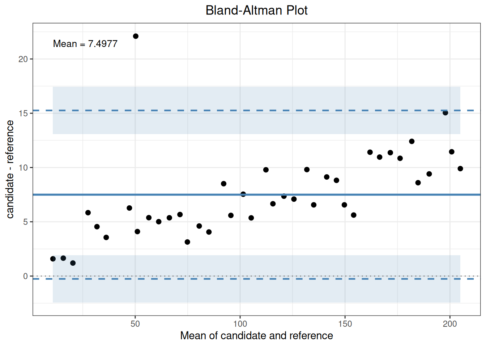

代码
library(ivdtools)
library(readr)方法学比较（method comparison）评价候选方法（candidate）与参考方法（reference）在相同样本上 测得结果的一致性，对应 CLSI EP09。ivdtools 的 mcr() 提供一个渐进式 S3 工作流：描述统计 → 相关分析 → 回归（OLS、WLS、Deming、加权 Deming、Passing–Bablok）→ Bland–Altman → 异常值 → 医学决定水平偏倚，并提供绘图、预测与汇总。本文以一个包含不同批次与样本类型的完整示例演示全流程， 并演示按批次/样本类型拆分后的子组比较。
示例数据为确定性的教学数据，其中人为加入了一个离群点以演示异常值检测；统计结果不自动构成合格 判定，接受标准应在分析前确定。
library(ivdtools)
library(readr)| 函数 | 主要用途 | 关键输入或输出 |
|---|---|---|
mcr() |
创建方法学比较对象 | id、candidate、reference、weights |
describe() |
描述统计 | 候选/参考/差值及额外列 |
correlation() |
相关分析 | pearson/spearman/kendall |
regression() |
回归拟合 | ols/wls/deming/wdeming/pb、lambda、weights |
bland_altman() |
一致性限 | difference/ratio/percent、x_axis |
outlier() |
差值异常值 | grubbs/esd/dixon/iqr、type |
bias() |
医学决定水平偏倚 | mdl、interval |
predict() |
正向/逆向预测 | 需先回归 |
plot() / summary() |
图形与汇总 | type 选择图形 |
数据包含 40 例，每例有编号 id、候选方法结果 candidate、参考方法结果 reference， 以及批次 batch（B1/B2）与样本类型 sample_type（serum/plasma/urine）：
mc_dat <- read_csv("./data/method-comparison.csv", show_col_types = FALSE)
mc_dat <- as.data.frame(mc_dat)
str(mc_dat)'data.frame': 40 obs. of 5 variables:
$ id : num 1 2 3 4 5 6 7 8 9 10 ...
$ batch : chr "B1" "B1" "B1" "B1" ...
$ sample_type: chr "serum" "plasma" "urine" "serum" ...
$ reference : num 10 14.9 19.7 24.6 29.5 34.4 39.2 44.1 49 53.8 ...
$ candidate : num 11.6 16.6 20.9 30.4 34 ...dim(mc_dat)[1] 40 5knitr::kable(table(mc_dat$batch), caption = "批次分布")| Var1 | Freq |
|---|---|
| B1 | 20 |
| B2 | 20 |
knitr::kable(table(mc_dat$sample_type), caption = "样本类型分布")| Var1 | Freq |
|---|---|
| plasma | 13 |
| serum | 14 |
| urine | 13 |
mc <- mcr(mc_dat, id = "id", candidate = "candidate", reference = "reference")mc <- describe(mc, cols = c("batch", "sample_type"))
Descriptive Statistics
Variable n Mean SD Min Q1 Median Q3 Max NA
---------------------------------------------------------------------------
candidate (X) 40 112.4977 59.2513 11.5900 63.1075 112.5750 159.5925 209.9000
reference (Y) 40 105.0000 56.9555 10.0000 57.4750 105.0000 152.5250 200.0000
Diff (X-Y) 40 7.4977 3.9583 1.2000 5.2725 6.6100 9.7950 22.1000
batch
Level Count Percent
--------------------------------------
B1 20 50.0%
B2 20 50.0%
sample_type
Level Count Percent
--------------------------------------
plasma 13 32.5%
serum 14 35.0%
urine 13 32.5%mc
Method Comparison
Data class: data.frame
Total rows: 40
Complete pairs: 40
ID variable: id
Test method (X): candidate
Reference (Y): reference
Duplicate IDs: none
Analysis slots:
[x] Describe
[ ] Correlation
[ ] Regression
[ ] Outlier
[ ] Bland-Altman
[ ] Biasdescribe() 的 cols 指定纳入描述的分类/数值附加列，支持 - 前缀排除。
mc <- correlation(mc, method = "pearson")
Correlation
Method: pearson
r = 0.9985, 95% CI [0.9971, 0.9992]
p-value: < 2.2e-16
n = 40参数说明：
correlation()的method可选"pearson"、"spearman"、"kendall"。 相关反映两变量共同变化的程度，不等于一致性，不能替代 Bland–Altman 或回归偏差评价。
依次比较 OLS、Deming、Passing–Bablok 与 WLS。由于 regression() 会更新对象内的回归结果，多种 方法分别存入不同对象以便比较：
mc_ols <- regression(mc, method = "ols")
Regression
Method: OLS
Intercept = -2.9723 (SE = 1.0971)
Slope = 0.9598 (SE = 0.0087)
Intercept 95% CI: [-5.1933, -0.7513]
Slope 95% CI: [0.9423, 0.9773]
H0: slope = 1 -> t = -4.6494, p = 3.944e-05
slope significantly different from 1 (CI excludes 1)
R-squared = 0.9969
Sigma = 3.2015
n = 40mc_dem <- regression(mc, method = "deming")
Regression
Method: Deming
Intercept = -3.1323 (SE = 1.4133)
Slope = 0.9612 (SE = 0.0092)
Intercept 95% CI: [-5.9934, -0.2712]
Slope 95% CI: [0.9426, 0.9798]
H0: slope = 1 -> t = -4.2313, p = 0.0001413
slope significantly different from 1 (CI excludes 1)
Sigma = 3.2026
n = 40mc_pb <- regression(mc, method = "pb")
Regression
Method: Passing-Bablok
Intercept = -2.1674 (SE = NA)
Slope = 0.9556 (SE = NA)
Intercept 95% CI: [-3.1487, -0.9828]
Slope 95% CI: [0.9444, 0.9669]
Sigma = 3.2299
n = 40mc_wls <- regression(mc, method = "wls", weights = "1/y")
Regression
Method: WLS
Weights: 1/y
Intercept = -2.2924 (SE = 0.9153)
Slope = 0.9518 (SE = 0.0108)
Intercept 95% CI: [-4.1452, -0.4396]
Slope 95% CI: [0.9299, 0.9736]
H0: slope = 1 -> t = -4.4712, p = 6.818e-05
slope significantly different from 1 (CI excludes 1)
R-squared = 0.9951
Sigma = 0.4819
n = 40knitr::kable(
data.frame(
方法 = c("OLS", "Deming", "Passing-Bablok", "WLS(1/y)"),
截距 = c(mc_ols$regression$intercept, mc_dem$regression$intercept,
mc_pb$regression$intercept, mc_wls$regression$intercept),
斜率 = c(mc_ols$regression$slope, mc_dem$regression$slope,
mc_pb$regression$slope, mc_wls$regression$slope)
),
digits = 4,
caption = "四种回归方法截距与斜率比较"
)| 方法 | 截距 | 斜率 |
|---|---|---|
| OLS | -2.9723 | 0.9598 |
| Deming | -3.1323 | 0.9612 |
| Passing-Bablok | -2.1674 | 0.9556 |
| WLS(1/y) | -2.2924 | 0.9518 |
print(mc_ols)
Method Comparison
Data class: data.frame
Total rows: 40
Complete pairs: 40
ID variable: id
Test method (X): candidate
Reference (Y): reference
Duplicate IDs: none
Analysis slots:
[x] Describe
[x] Correlation (pearson)
[x] Regression (OLS)
[ ] Outlier
[ ] Bland-Altman
[ ] Bias本例 OLS 斜率 ≈ 0.96，95% CI 不含 1，说明候选方法存在约 4% 的比例偏差（数据真实偏差即为 5%）。
参数说明：
regression()的method可选"ols"、"wls"、"deming"、"wdeming"、"pb"。 Deming 用lambda指定方差比（ref/cand，默认 1）；wls/wdeming必须提供weights（内置方案 或数据列名）；conf.level控制参数置信区间。
用 bias() 评价在医学决定水平（MDL）处的预测偏倚：
mc_ols <- bias(mc_ols, mdl = c(30, 80, 150), interval = "both")
Bias
Method: OLS
Interval: both (95%)
MDL points: 3
Bias range: [4.1791, 9.0064]
mdl bias ci_lower ci_upper pi_lower pi_upper
---------------------------------------------------
30 4.179112 2.407658 5.950566 -2.539698 10.89792
80 6.190463 5.018240 7.362685 -0.395770 12.77670
150 9.006354 7.789153 10.223554 2.411967 15.60074 mc_ols$biasplot(mc_ols, type = "bias", mdl = c(30, 80, 150))
参数说明：
bias(mdl, level, interval)中mdl为医学决定水平向量；interval可选""、"confidence"、"prediction"、"both"。偏倚定义参考候选方法mdl处的拟合值与mdl之差，解释时应结合回归方向和方案规定的允许偏倚。
mc_ols <- bland_altman(mc_ols, type = "difference")
Bland-Altman
Type: difference
Y-axis: candidate - reference
X-axis: Mean of candidate and reference
n = 40
Mean diff: 7.4977
SD diff: 3.9583
95% LoA: [-0.2603, 15.2558]
95% CI for LoA:
Lower LoA: [-2.4419, 1.9213]
Upper LoA: [13.0742, 17.4374]plot(mc_ols, type = "bland_altman")
mc_ols$bland_altman[c("mean_diff", "sd_diff", "loa")]$mean_diff
[1] 7.49775
$sd_diff
[1] 3.958259
$loa
lower upper
-0.2602947 15.2557947 参数说明：
bland_altman()的type可选"difference"、"ratio"、"percent"（Y 轴度量），x_axis可选"mean"、"candidate"、"reference"（X 轴）；agree.level控制 LoA 宽度，conf.level控制 LoA 置信区间。
对配对差值检测异常值：
mc_ols <- outlier(mc_ols, method = "grubbs", type = "difference")
Outlier
Method: grubbs
Data: Difference (candidate - reference)
Alpha: 0.05
1 outlier(s) found:
Row Value Statistic Critical
--------------------------------------------------
7 22.1000 3.6891 3.0361mc_ols$outlier
Outlier
Method: grubbs
Data: Difference (candidate - reference)
Alpha: 0.05
1 outlier(s) found:
Row Value Statistic Critical
--------------------------------------------------
7 22.1000 3.6891 3.0361mc_ols$outlier$indices[1] 7检测到第 7 号样本的差值明显偏大。检出异常值不等于应删除——应回查原始记录、实验过程，并在有 充分理由时进行包含/不包含的敏感性分析。
predict(mc_ols, candidate = c(40, 100))predict(mc_ols, reference = c(50, 120), inverse = TRUE)不同批次或样本类型的方法表现可能不同。先按批次拆分，再对子组重跑回归与 Bland–Altman：
for (b in c("B1", "B2")) {
sub <- mc_dat[mc_dat$batch == b, ]
mcs <- mcr(sub, id = "id", candidate = "candidate", reference = "reference")
mcs <- regression(mcs, method = "ols")
mcs <- bland_altman(mcs, type = "difference")
cat(b, ": slope =", round(mcs$regression$slope, 4),
", mean diff =", round(mcs$bland_altman$mean_diff, 3), "\n")
}
Regression
Method: OLS
Intercept = -2.9704 (SE = 2.2333)
Slope = 0.9582 (SE = 0.0327)
Intercept 95% CI: [-7.6623, 1.7215]
Slope 95% CI: [0.8895, 1.0269]
H0: slope = 1 -> t = -1.2784, p = 0.2173
slope not significantly different from 1 (CI contains 1)
R-squared = 0.9795
Sigma = 4.2427
n = 20
Bland-Altman
Type: difference
Y-axis: candidate - reference
X-axis: Mean of candidate and reference
n = 20
Mean diff: 5.5550
SD diff: 4.3129
95% LoA: [-2.8981, 14.0081]
95% CI for LoA:
Lower LoA: [-6.4069, 0.6107]
Upper LoA: [10.4993, 17.5169]
B1 : slope = 0.9582 , mean diff = 5.555
Regression
Method: OLS
Intercept = -1.3159 (SE = 2.3598)
Slope = 0.9502 (SE = 0.0142)
Intercept 95% CI: [-6.2736, 3.6419]
Slope 95% CI: [0.9203, 0.9801]
H0: slope = 1 -> t = -3.4988, p = 0.002564
slope significantly different from 1 (CI excludes 1)
R-squared = 0.9960
Sigma = 1.8780
n = 20
Bland-Altman
Type: difference
Y-axis: candidate - reference
X-axis: Mean of candidate and reference
n = 20
Mean diff: 9.4405
SD diff: 2.3693
95% LoA: [4.7968, 14.0842]
95% CI for LoA:
Lower LoA: [2.8693, 6.7244]
Upper LoA: [12.1566, 16.0117]
B2 : slope = 0.9502 , mean diff = 9.44 按样本类型同理 split() 后分别分析。子组比较的结论用于判断方法表现是否受批次/样本类型影响， 只有预先定义的接受标准才能支撑可接受性结论。
summary(mc_ols)
Method Comparison Regression (mcr)
-----------------------------------------------------
Method Comparison
Data class: data.frame
Total rows: 40
Complete pairs: 40
ID variable: id
Test method (X): candidate
Reference (Y): reference
Duplicate IDs: none
Analysis slots:
[x] Describe
[x] Correlation (pearson)
[x] Regression (OLS)
[x] Outlier (grubbs)
[x] Bland-Altman (difference)
[x] Bias
Descriptive Statistics
Variable n Mean SD Min Q1 Median Q3 Max NA
---------------------------------------------------------------------------
candidate (X) 40 112.4977 59.2513 11.5900 63.1075 112.5750 159.5925 209.9000
reference (Y) 40 105.0000 56.9555 10.0000 57.4750 105.0000 152.5250 200.0000
Diff (X-Y) 40 7.4977 3.9583 1.2000 5.2725 6.6100 9.7950 22.1000
batch
Level Count Percent
--------------------------------------
B1 20 50.0%
B2 20 50.0%
sample_type
Level Count Percent
--------------------------------------
plasma 13 32.5%
serum 14 35.0%
urine 13 32.5%
Correlation
Method: pearson
r = 0.9985, 95% CI [0.9971, 0.9992]
p-value: < 2.2e-16
n = 40
Regression
Method: OLS
Intercept = -2.9723 (SE = 1.0971)
Slope = 0.9598 (SE = 0.0087)
Intercept 95% CI: [-5.1933, -0.7513]
Slope 95% CI: [0.9423, 0.9773]
H0: slope = 1 -> t = -4.6494, p = 3.944e-05
slope significantly different from 1 (CI excludes 1)
R-squared = 0.9969
Sigma = 3.2015
n = 40
Outlier
Method: grubbs
Data: Difference (candidate - reference)
Alpha: 0.05
1 outlier(s) found:
Row Value Statistic Critical
--------------------------------------------------
7 22.1000 3.6891 3.0361
Bland-Altman
Type: difference
Y-axis: candidate - reference
X-axis: Mean of candidate and reference
n = 40
Mean diff: 7.4977
SD diff: 3.9583
95% LoA: [-0.2603, 15.2558]
95% CI for LoA:
Lower LoA: [-2.4419, 1.9213]
Upper LoA: [13.0742, 17.4374]
Bias
Method: OLS
Interval: both (95%)
MDL points: 3
Bias range: [4.1791, 9.0064]
mdl bias ci_lower ci_upper pi_lower pi_upper
---------------------------------------------------
30 4.179112 2.407658 5.950566 -2.539698 10.89792
80 6.190463 5.018240 7.362685 -0.395770 12.77670
150 9.006354 7.789153 10.223554 2.411967 15.60074